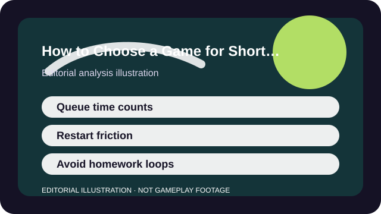

WHY THIS MATTERS
Use queue time, restart friction, interruption tolerance, and long-term goal fit instead of just looking at match length.
A short-session game is not simply a game with a short match timer. The real question is how much total friction sits around the part where you actually play: queues, load-in steps, party setup, warm-up needs, and whether the game punishes you for leaving after one round.
That is why some games with five-minute matches still feel like commitment monsters, while others with longer individual activities remain easy to dip into. The full session envelope matters more than the marketing line.

ANALYSIS
Count setup and reset time, not only match length
A five-minute race or duel is only truly short if the queue, party flow, or restart loop stays clean. Trackmania works because resets are instant. Rocket League works because the match ends cleanly and the next one begins without a giant ritual.
By contrast, a game with a nominally short match can still waste your whole window if friends need ten minutes to link accounts, the queue pool is slow, or the loadout dance feels mandatory before every round.
ANALYSIS
Interruption tolerance matters more than most lists admit
Some short-session players need games they can stop between rounds with almost no penalty. Others can handle one longer match if the start and end points are clearly bounded. Knowing which type you are changes the right recommendation immediately.
Hearthstone, Fall Guys, and many Roblox experiences are easy to cut off cleanly. A longer match in TFT or a deep Destiny 2 activity can still work—but only if your real-life interruptions are predictable enough to let you finish.
ANALYSIS
Beware progression that turns short windows into chores
Short sessions feel worst when the game uses them only to maintain a streak. If the whole point of logging in is to clear dailies before they expire, the session may be technically brief and emotionally expensive.
That is why battle passes, resin, or event checklists matter to this choice. Fortnite can feel great in short bursts if you ignore the pass pressure. Genshin and Warframe can fit small windows too, but only if their long-term systems do not convert every login into homework for you.
ANALYSIS
Social load is its own time cost
A game that needs two friends, cross-play confirmation, voice setup, and a shared mood is not truly short-session friendly for every player even if the rounds themselves are brief.
If your available time is inconsistent, solo-friendly short games usually travel better than squad-dependent ones. That does not make the squad games worse; it just means their real session budget includes the people around them.
TAKEAWAYS
The practical shortlist
- A real short-session game has low setup, low reset friction, or both.
- Interruption tolerance is often more important than the listed match timer.
- Progression systems can make a short login feel like homework instead of relief.
- Social setup time counts as session length whether a list admits it or not.
The best short-session game is the one that respects the whole shape of your evening. If the setup, pressure, or social coordination dwarfs the fun part, the clock on the match card never told the whole truth.
SOURCES AND LIMITS
What this analysis leans on
- Short-session fit is highly personal because interruptions, family context, and skill comfort vary widely.
- Live-service games can change queue times and progression pressure after this article is published.
- This article compares decision patterns, not hands-on performance across every platform.
This article is an editorial analysis, not a substitute for current store terms, patch notes, or support pages. Use the links above when the live fact itself is the thing you need.